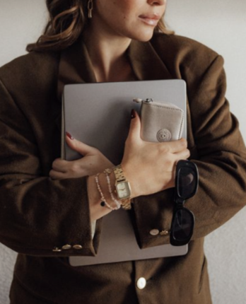
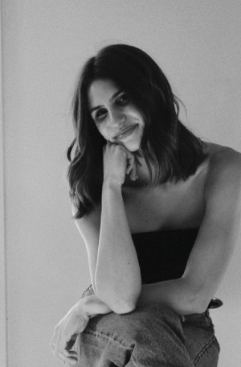

No recuerdo un momento de mi vida en el que no estuviera fascinada por las historias.
Crecí entre escenarios, imaginando personajes y aprendiendo que las emociones también podían contarse. Con el tiempo entendí que no quería interpretar historias. Quería ayudar a otras personas a descubrir las suyas. Viajar me enseñó que cada cultura construye su propio universo.
Las conversaciones, que siempre hay algo valioso detrás de una buena pregunta. Y el diseño, que la belleza solo tiene sentido cuando nace de una intención. Así nació Blomstra. Un estudio donde la estrategia, la narrativa y la dirección de arte se encuentran para construir universos capaces de sentirse. Porque sigo creyendo lo mismo que cuando era pequeña:
Las mejores historias son las que consiguen quedarse contigo.

Anna Aneas · The founder.
Designer, Creative Director & Visual Storyteller